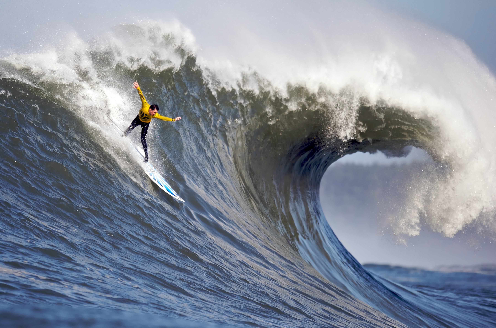

Graphics
What kind of photos are good to encode using JPEG? - it is good for real life photo, with the camera when you take a photo, the jpeg will save
What kind of photos are good to encode using GIF? - it is good for a cartoon or logo which have not many colors.
What is unique about the PNG format? - also good for cartoon, it has transparency support so even thought the background is same color, you can still tell throught transparency.
How do you resize your photo to the size it should be displayed?
- answer: make a class and go to css file and by using width or heigh, you can change the size. Or open with the paint app and resize it.
Why should you resize photos using photo editing software instead of resizing it using CSS?
- answer : if the photo is too big it will take longer time to get download. So if we use thd paint app, we are using CPU power to make the photo smaller, and shrink the photo volume which will help us to download faster.